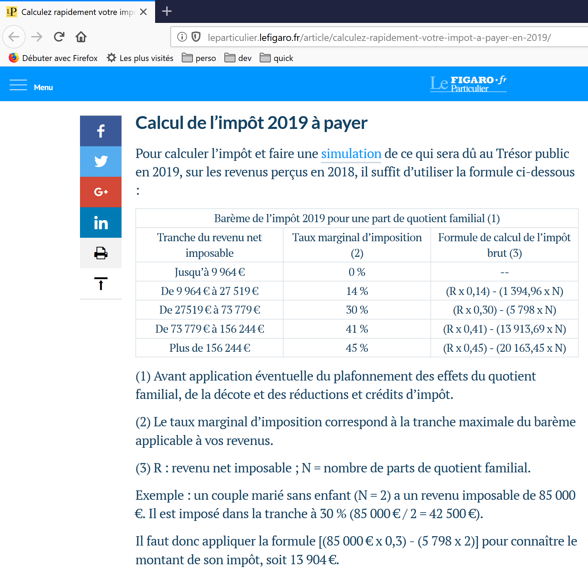
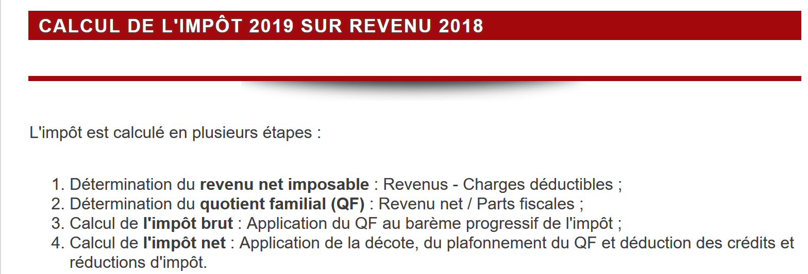
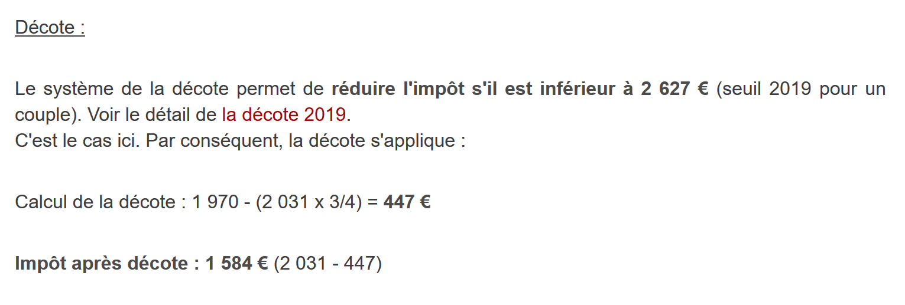
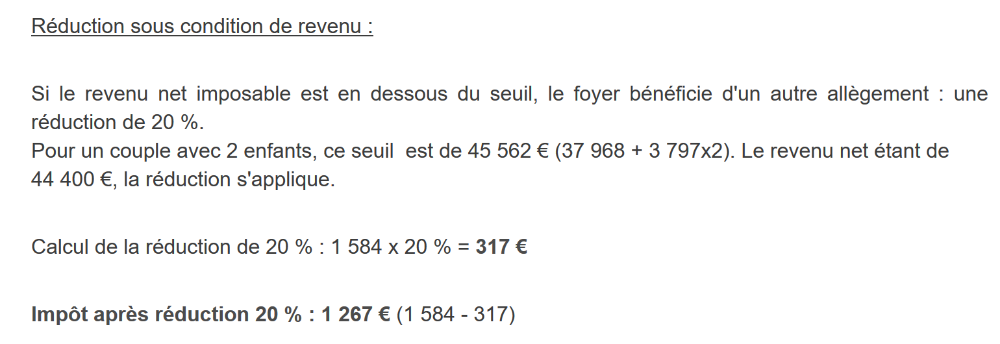

4. Exercice d'application – versions 1 et 2
4.1. Le problème

Le tableau ci-dessus permet de calculer l’impôt dans le cas simplifié d'un contribuable n'ayant que son seul salaire à déclarer. Comme l’indique la note (1), l’impôt ainsi calculé est l’impôt avant trois mécanismes :
- le plafonnement du quotient familial qui intervient pour les hauts revenus ;
- la décôte et la réduction d’impôts qui interviennent pour les faibles revenus ; Ainsi le calcul de l’impôt comprend les étapes suivantes [http://impotsurlerevenu.org/comprendre-le-calcul-de-l-impot/1217-calcul-de-l-impot-2019.php] :

On se propose d'écrire un programme permettant de calculer l'impôt d'un contribuable dans le cas simplifié d'un contribuable n'ayant que son seul salaire à déclarer :
4.1.1. Calcul de l’impôt brut
L’impôt brut peut être calculé de la façon suivante :
On calcule d’abord le nombre de parts du contribuable :
- chaque parent amène 1 part ;
- les deux premiers enfants amènent chacun 1/2 part ;
-
les enfants suivants amènent une part chacun : Le nombre de part est donc :
-
nbParts=1+nbEnfants*0,5+(nbEnfants-2)*0,5 si le salarié n’est pas marié ;
-
nbParts=2+nbEnfants*0,5+(nbEnfants-2)*0,5 s'il est marié ; où nbEnfants est son nombre d'enfants ;
-
on calcule le revenu imposable R=0.9*S où S est le salaire annuel ;
- on calcule le quotient familial QF=R/nbParts ;
- on calcule l’impôt brut I d'après les données suivantes (2019) :
9964 | 0 | 0 |
27519 | 0.14 | 1394.96 |
73779 | 0.3 | 5798 |
156244 | 0.41 | 13913.69 |
0 | 0.45 | 20163.45 |
Chaque ligne a 3 champs : champ1, champ2, champ3. Pour calculer l'impôt I, on recherche la première ligne où QF<=champ1 et on prend les valeurs de cette ligne. Par exemple, pour un salarié marié avec deux enfants et un salaire annuel S de 50000 euros :
Revenu imposable : R=0,9*S=45000
Nombre de parts : nbParts=2+2*0,5=3
Quotient familial : QF=45000/3=15000
La 1re ligne où QF<=champ1 est la suivante :
L'impôt I est alors égal à 0.14*R – 1394,96*nbParts=[0,14*45000-1394,96*3]=2115. L’impôt est arrondi à l’euro inférieur.
Si la relation QF<=champ1 dès la 1re ligne, alors l’impôt est nul.
Si QF est tel que la relation QF<=champ1 n'est jamais vérifiée, alors ce sont les coefficients de la dernière ligne qui sont utilisés. Ici :
ce qui donne l'impôt brut I=0.45*R – 20163,45*nbParts.
4.1.2. Plafonnement du quotient familial

Pour savoir si le plafonnement du quotient familial QF s’applique, on refait le calcul de l’impôt brut sans les enfants. Toujours pour le salarié marié avec deux enfants et un salaire annuel S de 50000 euros :
Revenu imposable : R=0,9*S=45000
Nombre de parts : nbParts=2 (on ne compte plus les enfants)
Quotient familial : QF=45000/2=22500
La 1re ligne où QF<=champ1 est la suivante :
L'impôt I est alors égal à 0.14*R – 1394,96*nbParts=[0,14*45000-1394,96*2]=3510.
Gain maximal lié aux enfants : 1551 * 2 = 3102 euros
Impôt minimal : 3510-3102 = 408 euros
L’impôt brut avec 3 parts déjà calculé 2115 euros est supérieur à l’impôt minimal 408 euros, donc le plafonnement familial ne s’applique pas ici.
De façon générale, l’impôt brut est sup(impôt1, impôt2) où :
- [impôt1] : est l’impôt brut calculé avec les enfants ;
- [impôt2] : est l’impôt brut calculé sans les enfants et diminué du gain maximal (ici 1551 euros par demi-part) lié aux enfants ;
4.1.3. Calcul de la décôte

Toujours pour le salarié marié avec deux enfants et un salaire annuel S de 50000 euros :
L’impôt brut (2115) issu de l’étape précédente est inférieur à 2627 euros pour un couple (1595 euros pour un célibataire) : la décôte s’applique donc. Elle est obtenue avec le calcul suivant :
décôte= seuil (couple=1970/célibataire=1196)-0,75* Impôt brut
décôte=1970-0,75*2115=383,75 arrondi à 384 euros.
Nouvel Impôt brut= 2115-384= 1731 euros
4.1.4. Calcul de la réduction d’impôts

Au-dessous d’un certain seuil, une réduction de 20 % est faite sur l’impôt brut issu des calculs précédents. En 2019, les seuils sont les suivants :
- célibataire : 21037 euros ;
- couple : 42074 euros ; ( le chiffre 37968 utilisé dans l’exemple ci-dessus semble erroné) ; Ce seuil est augmenté de la valeur : 3797 * (nombre de demi-parts amenées par les enfants).
Toujours pour le salarié marié avec deux enfants et un salaire annuel S de 50000 euros :
- son revenu imposable (45000 euros) est inférieur au seuil (42074+2*3797)=49668 euros ;
- il a donc droit à une réduction réduction de 20 % de son impôt : 1731 * 0,2= 346,2 euros arrondi à 347 euros ;
- l’impôt brut du contribuable devient : 1731-347= 1384 euros ;
4.1.5. Calcul de l’impôt net
Notre calcul s’arrêtera là : l’impôt net à payer sera de 1384 euros. Dans la réalité, le contribuable peut bénéficier d’autres réductions notamment pour des dons à des organismes d’intérêt public ou général.
4.1.6. Cas des hauts revenus
Notre exemple précédent correspond à la majorité des cas de salariés. Cependant le calcul de l’impôt est différent dans le cas des hauts revenus.
4.1.6.1. Plafonnement de la réduction de 10 % sur les revenus annuels
Dans la plupart des cas, le revenu imposable est obtenu par la formule : R=0,9*S où S est le salaire annuel. On appelle cela la réduction des 10 %. Cette réduction est plafonnée. En 2019 :
- elle ne peut être supérieure à 12502 euros ;
-
elle ne peut être inférieure à 437 euros ; Prenons le cas d’un salarié non marié sans enfants et un salaire annuel de 200000 euros :
-
la réduction de 10 % est de 20000 euros > 12502 euros. Elle est donc ramenée à 12502 euros ;
4.1.6.2. Plafonnement du quotient familial
Prenon un cas où le plafonnement familial présenté au paragraphe lien intervient. Prenons le cas d’un couple avec trois enfants et des revenus annuels de 100000 euros. Reprenons les étapes du calcul :
- l’abattement de 10 % est de 10000 euros < 12502 euros. Le revenu imposable R est donc 100000-10000=90000 euros ;
- le couple a nbParts=2+0,5*2+1=4 parts ;
- son quotient familial est donc QF= R/nbParts=90000/4=22500 euros ;
- son impôt brut I1 avec enfants est I1=0,14*90000-1394,96*4= 7020 euros ;
- son impôt brut I2 sans enfants :
- QF=90000/2=45000 euros ;
- I2=0,3*90000-5798*2=15404 euros ;
- la règle du plafonnement du quotient familial dit que le gain amené par les enfants ne peut dépasser (1551*4 demi-parts)=6204 euros. Or ici, il est I2-I1=15404-7020= 8384 euros, donc supérieur à 6204 euros ;
- l’impôt brut est donc recalculé comme I3=I2-6204=15404-6204= 9200 euros ; Ce couple n’aura ni décôte, ni réduction et son impôt final sera de 9200 euros.
4.1.7. Chiffres officiels
Le calcul de l’impôt est complexe. Tout au long du document, les tests seront faits avec les exemples suivants. Les résultats sont ceux du simulateur de l’administration fiscale [*https://www3.impots.gouv.fr/simulateur/calcul_impot/2019/simplifie/index.htm*] :
Contribuable | Résultats officiels | Résultats de l’algorithme du document |
Couple avec 2 enfants et des revenus annuels de 55555 euros | Impôt=2815 euros Taux d’imposition=14 % | Impôt=2814 euros Taux d’imposition=14 % |
Couple avec 2 enfants et des revenus annuels de 50000 euros | Impôt=1385 euros Décôte=720 euros Réduction=0 euros Taux d’imposition=14 % | Impôt=1384 euros Décôte=384 euros Réduction=347 euros Taux d’imposition=14 % |
Couple avec 3 enfants et des revenus annuels de 50000 euros | Impôt=0 euro Décôte=384 euros Réduction=346 euros Taux d’imposition=14 % | Impôt=0 euro Décôte=720 euros Réduction=0 euro Taux d’imposition=14 % |
Célibataire avec 2 enfants et des revenus annuels de 100000 euros | Impôt=19884 euros Décôte=0 euro Réduction=0 euro Taux d’imposition=41 % | Impôt=19884 euros Surcôte=4480 euros Décôte=0 euro Réduction=0 euro Taux d’imposition=41 % |
Célibataire avec 3 enfants et des revenus annuels de 100000 euros | Impôt=16782 euros Décôte=0 euro Réduction=0 euro Taux d’imposition=41 % | Impôt=16782 euros Surcôte=7176 euros Décôte=0 euro Réduction=0 euro Taux d’imposition=41 % |
Couple avec 3 enfants et des revenus annuels de 100000 euros | Impôt=9200 euros Décôte=0 euro Réduction=0 euro Taux d’imposition=30 % | Impôt=9200 euros Surcôte=2180 euros Décôte=0 euro Réduction=0 euro Taux d’imposition=30 % |
Couple avec 5 enfants et des revenus annuels de 100000 euros | Impôt=4230 euros Décôte=0 euro Réduction=0 euro Taux d’imposition=14 % | Impôt=4230 euros Décôte=0 euro Réduction=0 euro Taux d’imposition=14 % |
Célibataire sans enfants et des revenus annuels de 100000 euros | Impôt=22986 euros Décôte=0 euro Réduction=0 euro Taux d’imposition=41 % | Impôt= 22986 euros Surcôte=0 euro Décôte=0 euro Réduction=0 euro Taux d’imposition=41 % |
Couple avec 2 enfants et des revenus annuels de 30000 euros | Impôt=0 euro Décôte=0 euro Réduction=0 euro Taux d’imposition=0 % | Impôt=0 euro Décôte=0 euro Réduction=0 euro Taux d’imposition=0 % |
Célibataire sans enfants et des revenus annuels de 200000 euros | Impôt=64211 euro Décôte=0 euro Réduction=0 euro Taux d’imposition=45 % | Impôt= 64210 euros Surcôte=7498 euros Décôte=0 euro Réduction=0 euro Taux d’imposition=45 % |
Couple avec 3 enfants et des revenus annuels de 200000 euros | Impôt=42843 euro Décôte=0 euro Réduction=0 euro Taux d’imposition=41 % | Impôt=42842 euros Surcôte=17283 euros Décôte=0 euro Réduction=0 euro Taux d’imposition=41 % |
Ci-dessus, on appelle surcôte, ce que paient en plus les hauts revenus à cause de deux phénomènes :
- le plafonnement de l’abattement de 10 % sur les revenus annuels ;
- le plafonnement du quotient familial ; Cet indicateur n’a pu être vérifié car le simulateur de l’administration fiscale ne le donne pas.
On voit que l’algorithme du document donne un impôt juste à chaque fois, avec cependant une marge d’erreur de 1 euro. Cette marge d’erreur provient des arrondis. Toutes les sommes d’argent sont arrondies parfois à l’euro supérieur, parfois à l’euro inférieur. Comme je ne connaissais pas les règles officielles, les sommes d’argent de l’algorithme du document ont été arrondies :
- à l’euro supérieur pour les décôtes et réductions ;
- à l’euro inférieur pour les surcôtes et l’impôt final ; Dans la suite, des tests seront établis pour vérifier la validité des résultats. Ils seront faits avec les exemples du tableau précédent avec une marge d’erreur acceptée de 1 euro.
4.2. L’arborescence des scripts

4.3. Version 1
4.3.1. L’algorithme
Nous présentons un premier programme où :
- les données nécessaires au calcul de l'impôt sont codées en dur dans le code sous forme de tableaux et de constantes ;
- les données des contribuables (marié, enfants, salaire) sont dans un premier fichier texte [taxpayersdata.txt] ;
- les résultats du calcul de l'impôt (marié, enfants, salaire, impôt) sont mémorisés dans un second fichier texte [resultats.txt] ; Le script [version-01/main.php] est le suivant :
1 2 3 4 5 6 7 8 9 10 11 12 13 14 15 16 17 18 19 20 21 22 23 24 25 26 27 28 29 30 31 32 33 34 35 36 37 38 39 40 41 42 43 44 45 46 47 48 49 50 51 52 53 54 55 56 57 58 59 60 61 62 63 64 65 66 67 68 69 70 71 72 73 74 75 76 77 78 79 80 81 82 83 84 85 86 87 88 89 90 91 92 93 94 95 96 97 98 99 100 101 102 103 104 105 106 | |
Le fichier des données taxpayersdata.txt (marié, enfants, salaire) :
Les fichier résultats.txt (marié, enfants, salaire, impôt, surcôte, décôte, réduction, taux d’imposition) des résultats obtenus :
Commentaires
- ligne 4 : on force le respect strict du type des paramètres des fonctions ;
- lignes 7-16 : définition de toutes les constantes nécessaire au calcul de l’impôt ;
- ligne 19 : le nom du fichier texte contenant les données des contribuables (marié, enfants, salaire) ;
- ligne 20 : le nom du fichier texte contenant les résultats (marié, enfants, salaire, impôt) du calcul de l'impôt ;
- lignes 21-23 : les trois tableaux des données définissant les différentes tranches d’imposition du calcul de l'impôt ;
- lignes 26-30 : ouverture en lecture [r] du fichier des données contribuables. La fonction [fopen] rend le booléen FALSE si l’ouverture n’a pu se faire ;
- lignes 33-37 : ouverture en écriture [w] du fichier des résultats ;
- lignes 40-51 : boucle de lecture des lignes (marié, enfants, salaire) du fichier des données contribuables ;
- ligne 40 : la fonction [fgets] lit 100 caractères et s’arrête à la 1re marque de fin de ligne rencontrée. Ici toutes les lignes font moins de 100 caractères. Si une marque de fin de ligne a été rencontrée, elle est incluse dans la chaîne rendue. Lorsque la fin du fichier est rencontrée, la fonction [fgets] rend la valeur FALSE ;
- ligne 42 : la marque de fin de ligne est enlevée ;
- ligne 44 : les composantes (marié, enfants, salaire) de la ligne sont récupérées ;
- ligne 46 : l'impôt est calculé. Le résultat est rendu sous la forme d’un tableau associatif (ligne 76) ;
- ligne 48 : au tableau récupéré précédemment, on rajoute les clés [marié, enfants, salaire] ;
- ligne 49 : le résultat est mémorisé dans le fichier des résultats sous la forme d’une chaîne jSON ;
- lignes 53-54 : une fois le fichier des données contribuables exploité totalement, les fichiers sont fermés ;
- ligne 60 : la fonction qui supprime la marque de fin de ligne d'une ligne $ligne. La marque de fin de ligne est la chaîne "\r\n" sur les systèmes windows, "\n" sur les systèmes Unix. Le résultat est la chaîne d'entrée sans sa marque de fin de ligne.
- lignes 63-64 : substr($chaîne,$début,$taille) est la sous-chaîne de $chaîne commençant au caractère $début et ayant au plus $taille caractères ; La fonction [calculImpot] est la suivante :
Commentaires
- ligne 10 : l’impôt brut est calculé avec les enfants. On obtient un résultat sous la forme ["impôt" => $impôt, "surcôte" => $surcôte, "taux" => $coeffR[$i]] avec :
- [‘impôt’] : l’impôt brut ;
- [‘surcôte’] : le montant de la surcôte s’il y a. Celle-ci existe lorsque l’abattement de 10 % dépasse le seuil de 12502 euros ;
- [‘taux’] : le taux d’imposition du contribuable ;
- ligne 11 : l’impôt [impot1] brut à payer ;
- lignes 13-14 : si le contribuable a au moins un enfant, le calcul de l’impôt est refait avec les mêmes données mais avec 0 enfant. Ce second calcul est nécessaire pour voir si la réduction amenée par les enfants (nbParts*coeffN) est supérieure à un certain seuil ;
- ligne 15 : l’impôt brut [impot2] à payer ;
- lignes 16-23 : pour l’impôt brut [impot2], on fait jouer maintenant les enfants : chaque 1/2 part amenée par les enfants permet une réduction de [PLAFOND_QF_DEMI_PART] euros ;
- lignes 25-26 : cas où le contribuable n’a pas d’enfants. Dans ce cas, le calcul de [impot2] est inutile. Il est égal à [impot1] ;
- lignes 29-37 : deux impôts bruts ont été calculés [impot1, impot2]. L’administration fiscale retient le plus fort des deux. On obtient un impôt brut [impot] ;
- lignes 39-40 : le montant brut [impot] peut subir une décôte ;
- lignes 42-43 : le montant brut [impot] peut subir une réduction ;
- ligne 45 : [impot] est désormais l’impôt net à payer. On rend les résultats ; La fonction [calculImpot2] est la suivante :
Commentaires
- on applique ici le calcul de l’impôt dit au barême progressif ;
- ligne 9 : strtolower($chaîne) rend $chaîne en minuscules ;
- lignes 10-19 : calcul du nombre de parts du contribuable ;
- ligne 21 : on calcule le revenu imposable à l’aide d’une fonction. En effet, on a vu que ce n’est pas toujours 0.9*revenusAnnuels. L’abattement de 10 % est en effet limité à 12502 euros ;
- ligne 23 : calcul de l’éventuelle surcôte si le revenu imposable est supérieur à 0.9*revenusAnnuels ;
- lignes 25-27 : corrige le fait qu’à cause d’erreurs d’arrondis, on a parfois [$surcôte=-1] ;
- ligne 29 : le quotient familial ;
- lignes 30-36 : ce quotient permet de trouver la tranche d’imposition du contribuable ;
- ligne 40 : une fois la tranche d’imposition du contribuable trouvée, son impôt brut peut être calculé. La fonction floor($x) rend la valeur entière immédiatement inférieure à [$x] ;
- ligne 42 : on rend les informations calculées ; La fonction [getRevenuImposable] est la suivante :
Commentaires
- ligne 5 : l’abattement normal est de 10 % du salaire annuel ;
- lignes 7-9 : l’abattement ne peut dépasser l’abattement maximal [ABATTEMENT_DIXPOURCENT_MAX] ;
- lignes 10-13 : l’abattement ne peut être inférieur à l’abattement minimal [ABATTEMENT_DIXPOURCENT_MIN] ;
- ligne 15 : calcul du revenu imposable ; La fonction [getDecote] est la suivante :
Commentaires
- ligne 6 : montant maximal de l’impôt brut pour avoir droit à une décôte. Ce montant est différent pour les célibataires et les couples ;
- ligne 7 : si le contribuable a droit à la décôte ;
- ligne 11 : la formule de la décôte. [plafondDécôte] est le montant maximal de la décôte. Ce montant maximal est calculé ligne 9. Là encore il dépend de la situation du contribuable, marié ou célibataire ;
- lignes 13-15 : la décôte ne peut être supérieure à l’impôt brut à payer. C’est le cas par exemple si [impots] vaut 0 en ligne 11 ;
- lignes 17-19 : pour éviter un arrondi à -1 ; La fonction [getRéduction] est la suivante :
Commentaires
- lignes 4-10 : pour avoir droit à une réduction d’impôt, il faut que le revenu imposable (ligne 10) soit inférieur à un plafond calculé lignes 4-8 ;
- lignes 13-16 : s’il remplit les conditions, le contribuable a droit à une réduction d’impôt de 20 % (ligne 15) ;
4.3.2. Résultats
Le fichier des données taxpayersdata.txt (marié, enfants, salaire) :
Les fichier résultats.txt (marié, enfants, salaire, impôt, surcôte, décôte, réduction, taux d’imposition) des résultats obtenus :
Les résultats obtenus sont conformes à ceux obtenus avec le simulateur de l’administration fiscale.
4.3.3. Conclusion
L’algorithme de calcul de l’impôt, même dans des cas réputés simples, est complexe. Nous ne reviendrons plus dessus. Au fil des versions, son cœur restera le même malgré quelques changements de présentation. On ne commentera alors que ces derniers.
4.4. Version 2
4.4.1. Les modifications
Dans la version précédente, les données nécessaires au calcul de l’impôt étaient codées en dur sous la forme de constantes et de tableaux. Cette méthode est à prohiber. Dans la nouvelle version, ces données sont externalisées dans un fichier jSON :

Le contenu du fichier [taxadmindata.json] est le suivant :
La nouvelle version [version-02/main.php] est la suivante :
1 2 3 4 5 6 7 8 9 10 11 12 13 14 15 16 17 18 19 20 21 22 23 24 25 26 27 28 29 30 31 32 33 34 35 36 37 38 39 40 41 42 43 44 45 46 47 48 49 50 51 52 53 54 55 56 57 58 59 60 61 62 63 64 65 66 67 68 69 70 71 72 73 74 75 76 77 78 79 80 81 82 83 84 85 86 87 88 89 90 91 92 93 94 95 96 97 98 99 100 101 102 103 104 105 106 107 108 109 110 111 112 113 114 115 116 117 118 119 120 121 122 123 124 125 126 127 128 129 130 131 132 133 134 135 136 137 138 139 140 141 142 143 144 145 146 147 148 149 150 151 152 153 154 155 156 | |
Commentaires
- lignes 11-19 : on essaie de lire le contenu du fichier jSON nommé [TAXADMINDATA] ;
- lignes 21-30 : si on a réussi à lire le fichier jSON, son contenu est décodé dans le tableau associatif [$taxAdminData] ;
- lignes 32-36 : si on a rencontré une erreur dans une des deux opérations précédentes, on écrit un message d’erreur sur la console et on s’arrête ;
- la différence avec la version 01 est qu’ici les données (tableaux et constantes) de l’administration fiscale sont dans le tableau associatif [$taxAdminData] alors que dans la version 01, elles étaient dans des tableaux et constantes globales. C’est la globalité de ces constantes qui fait la différence entre les deux versions :
- dans la version 01, les constantes étaient connues dans toutes les fonction de [main.php] ;
- pour arriver au même résultat dans la version 02, il faut passer le tableau associatif [$taxAdminData] en paramètre à toutes les fonctions (lignes 83, 129, 138, 145, 152) ;
- chaque fonction de la version 02 doit utiliser le contenu du tableau [$taxAdminData] ;
- lignes 83-126 : dans la fonction [calculerImpot], là où on utilisait des constantes globales ou les tableaux [limites, coeffR, coeffN], on utilise désormais le contenu du tableau [$taxAdminData] reçu en paramètre (lignes 99, 102) ;
- toutes les autres fonctions sont réécrites de la même façon ; Les résultats obtenus sont les mêmes que ceux obtenus dans la version précédente.
4.4.2. Conclusion
La version 02 est bien plus souple que la version 01. En 2020, l’algorithme de calcul de l’impôt sera probablement le même qu’en 2019. Seules les tranches d’imposition et les constantes de calcul auront changé. Il suffira alors de mettre à jour le fichier [taxadmindata.json]. Avec la version 01, il faut aller dans le code modifier les tranches d’imposition et les constantes de calcul. Or il est probable que les gens qui ont à changer les valeurs des tranches d’imposition et des constantes de calcul n’ont pas accès au code de l’algorithme.